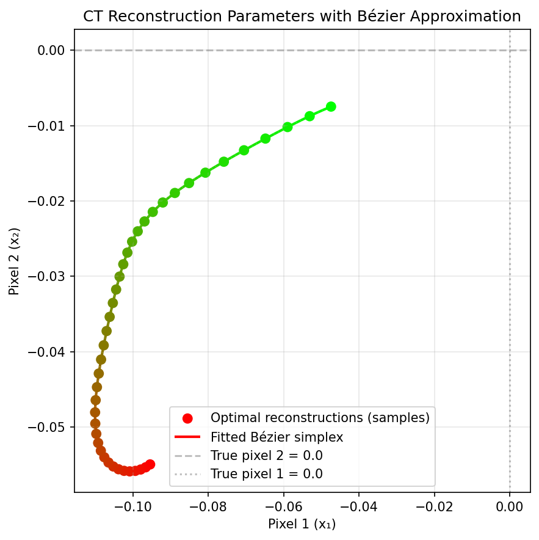
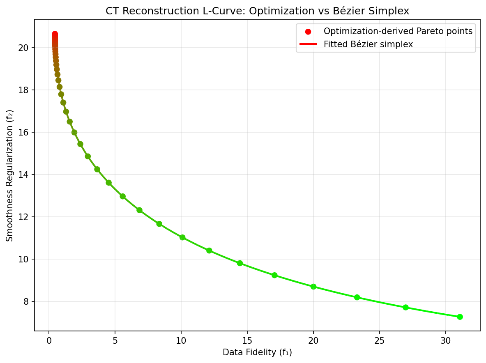
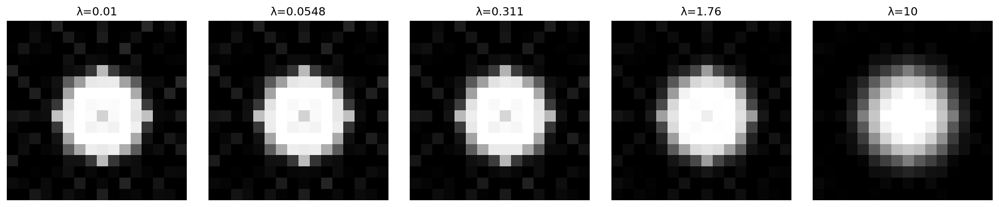

Medical Imaging and Radiation Therapy
Optimizing diagnostic clarity and therapeutic safety simultaneously is paramount in medical fields, making multi-objective optimization frameworks indispensable.
For instance, Computed Tomography (CT) image reconstruction represents an ill-posed multi-objective inverse problem where doctors must minimize a data fidelity term (noise residual) against a regularization term safeguarding spatial continuity. Utilizing the L-Curve method [HOLeary93], this is routinely formulated mathematically as balancing:
Similarly, Intensity-Modulated Radiation Therapy (IMRT) requires treating patients via highly constrained inverse planning [BSK+07]. Planners must aggressively deliver prescriptive radiation doses to tumors while strictly repressing the doses affecting adjacent healthy Organs At Risk (OAR). The optimization minimizes heavily competing quadratic objectives:
where the first component penalizes dose errors via beamlet fluence \(f\), and the second component applies spatial smoothing.
For CT, the quadratic Hessian is \(2(K^T K+\lambda^2L^T L)\). For \(\lambda>0\), it is positive definite precisely when \(\ker K\cap\ker L=\{0\}\). A smoothing penalty alone need not remove all null directions. The analogous nullspace check is needed for the IMRT Hessian. The numerical experiment below instead adds an explicit positive ridge to each objective, ensuring positive curvature in all pixel directions.
A surrogate can make exploration of a fixed inverse problem less expensive. The experiment here evaluates that approximation on a synthetic CT phantom; it does not evaluate treatment plans or clinical decisions.
Numerical Experiments
We illustrate Bézier simplex fitting on a small CT reconstruction problem, tracing the L-curve between data fidelity and spatial smoothness.
Problem Setup:
Image: \(x \in \mathbb{R}^{256}\) (flattened 16×16 circular phantom)
Forward operator: \(K \in \mathbb{R}^{128 \times 256}\) (simplified 2D Radon transform, 8 angles × 16 rays per angle)
Finite-difference operator: \(L\) (horizontal and vertical differences; the squared norm below is quadratic smoothing, rather than total variation)
Noisy measurement: \(y = Kx^* + \epsilon\) (\(\epsilon \sim \mathcal{N}(0, 0.05^2)\))
Regularized objectives:
Parametrization of the trade-off:
The weighted-sum solution \(x^*(w)\) depends only on the regularization parameter \(\lambda = w_2 / w_1\). Because \(K^\top K\) and \(L^\top L\) have nearly complementary spectra (smooth images are barely penalized by \(L\) but strongly seen by \(K\), and vice versa), \(x^*(w)\) has poles just outside the weight simplex: with uniformly spaced weights, almost all of the L-curve is squeezed into a tiny neighborhood of \(w = (1, 0)\), where no low-degree polynomial can follow it. As in the classical L-curve analysis, we therefore sweep \(\lambda\) on a logarithmic scale and fit the Bézier simplex on the parameter \((1 - t, t)\) of the 1-simplex:
Experiment Procedure:
Sample 41 equally spaced parameters \(t \in [0, 1]\), i.e., \(\lambda\) from \(10^{-2}\) to \(10^{1}\).
For each \(t\), solve \(x^*(t) = \arg\min_x [w_1(t) f_1(x) + w_2(t) f_2(x)]\) using L-BFGS-B with the analytic gradient.
Collect the Pareto front points \((f_1(x^*(t)), f_2(x^*(t)))\) and the reconstructions \(x^*(t)\).
Fit degree-10 Bézier simplices to the Pareto front and to the Pareto set (the 256 pixels) by exact linear least squares (
torch_bsf.fit()).Evaluate the fitted Bézier curves on 20 held-out parameters between the training ones.
On the held-out parameters, the maximum error is about \(10^{-3}\) on the Pareto front (whose \(f_1\) ranges over \([0.4, 31]\)) and below \(10^{-4}\) per pixel on the Pareto set.
 |
 |
Pareto set (two background pixels). |
Pareto front. |



Fig. 45 Reconstructions predicted by the Bézier simplex fitted to the Pareto set, from weak (left) to strong (right) smoothing.
The complete example script is available at examples/generate_medical_imaging_pareto.py.
Distinguish the fit parameter from objective weights
The input to the fitted curve is [1-t, t], not [w1(t), w2(t)].
The logarithmic transform spreads the selected regularization range across
the segment. At t=0 the ratio is \(10^{-2}\); at t=1 it is
\(10\). Neither endpoint represents a pure single-objective optimum.
Record this transform alongside the fitted model so a requested
regularization value is converted consistently.
For a requested \(\lambda\) in that range, use
Changing the logarithmic range changes the function being approximated and requires a new fit. Passing the normalized objective weights directly to the existing model would query a different location and give the wrong reconstruction even though that row is a valid simplex point.
Construct and compare the two models
The front model has two output columns, while the reconstruction model has
256, one per flattened pixel. Both use
BezierSpace.simplex(1, degree=10) and 11 controls. The same 41 parameter
rows are paired with the corresponding objectives or reconstructed images.
The core least-squares solve handles all columns with the same design
matrix; the large pixel count does not increase the domain dimension.
For an independent reconstruction at a new parameter, the exact quadratic stationarity equation is
The ridge stays \(0.01I\) because the two objective weights sum to one. This system supplies a reference for the stated unconstrained example. Use its residual or the original solver’s convergence evidence to separate reference-solve error from surrogate approximation error.
Read error in image space as well as loss space
The Pareto-set projection shows only two pixel coordinates. It cannot show the quality of a whole 16-by-16 image. Compare full reconstructed images, per-pixel errors and their maximum over the held-out parameters. Inspect edges and low-contrast regions separately, since a mean over background pixels can conceal a localized defect.
Recompute fidelity and smoothness on predicted images and compare them with both the reference values and the independently fitted front. A close front prediction does not determine an image uniquely in a general inverse problem. The quoted errors describe this phantom, noise realization, operators and regularization interval. They do not establish performance on another acquisition geometry or a clinical image population.
The surrogate assumes fixed measurements \(y\) and fixed operators. New measurements generally require new reference reconstructions and a new fit; the segment parameter changes regularization, not the patient or the data. If nonnegative pixels or other constraints are introduced, check their satisfaction after prediction. See Output scaling for preserving output units and Cross-validation and degree search for choosing capacity using held-out responses.